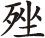

【渔家傲】 （末上 [1] ） 乌兔天边才打照 [2] ，仙翁海上驴儿叫 [3] 。一霎蟠桃花绽了，犹难道，仙花也要闲人扫。一枕余甜昏又晓 [4] ，凭谁拨转通天窍 [5] 。白日 西还是早 [6] ，回头笑，忙忙过了邯郸道。
何仙姑独游花下
[7]
，吕洞宾三过岳阳
[8]
。
俏崔氏坐成花烛，蠢卢生梦醒黄粱
[9]
。
[1] 末：戏曲角色名。宋元南戏和明清传奇中，有“副末开场”之说。在传奇剧本的第一出，由副末上场用一两首词向观众介绍创作意图和剧情梗概。
[2] 乌兔：古代神话传说日中有三脚乌，月中有玉兔，故合称“日月”为乌兔。后常用乌兔来比喻时间。晋左思《吴都赋》：“笼乌兔于日月，穷飞走之栖宿。”唐吕岩《七言》诗之五八：“但得烟霞供岁月，任他乌兔走乾坤。”明高启《青丘子歌》：“不问龙虎苦战斗，不管乌兔忙奔倾。向水际独坐，林中独行。”打照：打照面，碰面。
[3] 仙翁：这里是指八仙中的张果老。张果老在传说中一般以骑驴的形象出现。唐郑处晦《明皇杂录》云：张果者，隐于恒州条山，常往来汾晋间，时人称有长年秘术。耆老云，为儿童时见之，自言数百岁矣。唐太宗、高宗屡征不起。则天召之出山，佯死于妒女庙前。时方盛热，须臾臭烂生虫，闻则天，信其死矣。后有人恒州山中复见之。果常乘一白驴，日行数万里。休则重叠之，置于巾箱中，乘以水噀之，还成驴矣。
[4] 余甜：酣甜的睡眠。
[5] 拨转：扭转。通天窍：通向升天之路。
[6]  （cuō）西：日往西偏，指太阳快下山。
[7] 何仙姑：民间传说中的八仙之一。宋魏泰《东轩笔记》云，北宋永州有善福祸的何氏女，人称何仙姑。《续道藏·吕祖志》又说何仙姑是零陵人，自幼采茶山中，后被吕洞宾度成仙人。
[8] 吕洞宾：民间传说中的八仙之一，名岩。相传为唐京兆人。或作河中尉（今山西永济县）人。咸通中及第，后隐居终南山修道，不知所终。自称回道人。有关他的传说很多，道家正阳派称为纯阳祖师，故称吕祖。传说吕洞宾曾三过岳阳楼。唐吕岩诗《绝句》云：“三入岳阳人不识，朗吟飞过洞庭湖。”元代马致远有《吕洞宾三醉岳阳楼》杂剧。
[9] 黄粱：黄粱梦的故事。唐沈既济《枕中记》载卢生道遇吕翁，邯郸店中昼寝入梦，历尽荣华富贵。梦醒，黄粱饭尚未熟，卢生大悟，遂入道。后世以“黄粱梦”比喻虚幻之事。
明清传奇第一出为副末开场，又称“标引”、“标目”、“家门”、“开宗”，即在正戏开演之前，先由副末上场报告演唱宗旨和剧情大意，后由五言或七言诗作结扣题。
此处标引简单介绍了《邯郸记》的大致剧情“何仙姑独游花下，吕洞宾三过岳阳。俏崔氏坐成花烛，蠢卢生梦醒黄粱”。“仙花也要闲人扫”则是“邯郸梦”的缘起。“犹难道”、“凭谁”、“笑”、“俏”、“蠢”等字词，则透露出了汤显祖创作这部传奇的宗旨和感情，与后相互呼应。
“邯郸梦”故事源于唐沈既济《枕中记》，宣扬了人生如梦的思想。这个故事多次被剧作家改编成神仙道化剧。如元代马致远的《吕洞宾三醉岳阳楼》、谷子敬《邯郸道卢生枕中记》、无名氏所作《吕翁三化邯郸店》、苏汉英《梦境记》等等。汤显祖《邯郸记》的基本结构来自于《枕中记》，吸收了元明戏曲的一些情节，如“八仙度卢”等，但更多的内容是他十几年官场生活的总结和反省，因此其内涵极为丰富与细致，反映了明代社会和官场种种现象与风气。正如黄文锡、吴凤雏《汤显祖传》评价说：“……举凡对当时社会之黑暗，官场之腐败，权贵之骄横，士林之媚谄，都作了尖锐深刻的揭露。其锋芒所指，上至皇帝权臣，旁及科场、制诰、封荫等各种典制，纷纭复杂，无所不及，正无异于一部明代中晚期的《官场现形记》，一部反映封建末世人情风物的百科全书……”